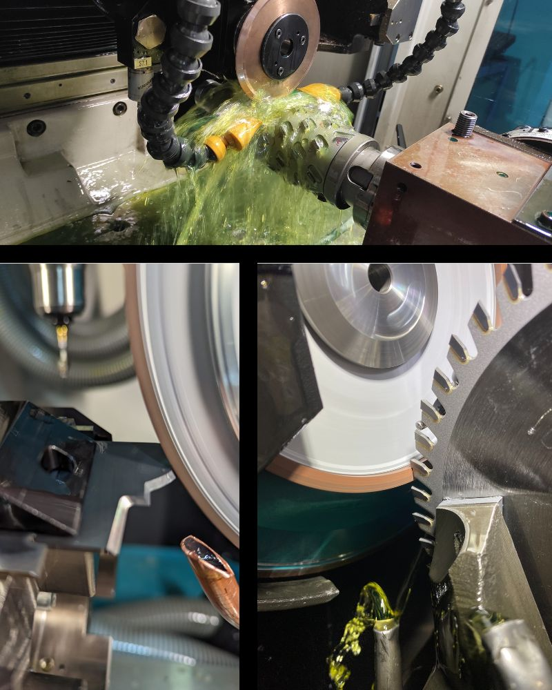
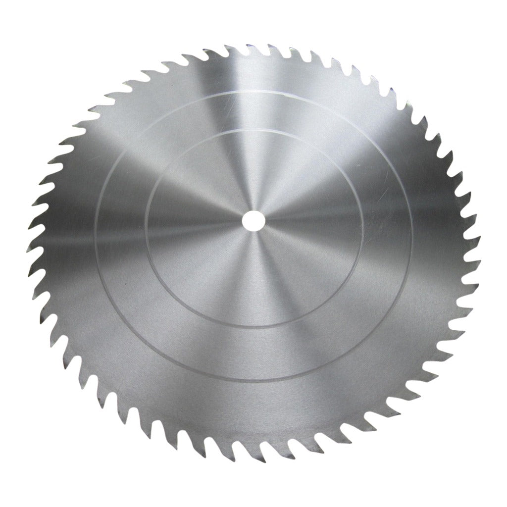
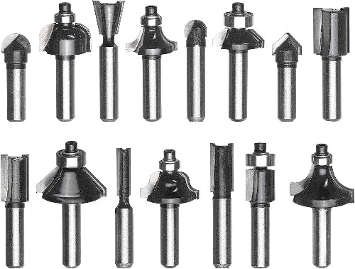
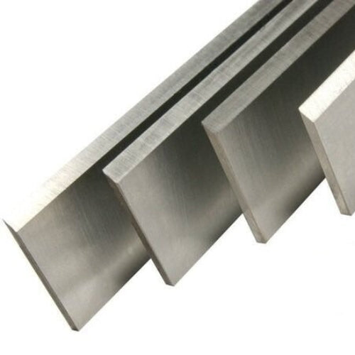

Sie suchen einen zuverlässigen Schärfdienst?
Wir holen Ihre Werkzeuge im Betrieb ab, schärfen sie bei uns in Dorsten und bringen sie wieder zurück.
- Eigener Abhol- und Bringservice
- Alle Schärfarbeiten im eigenen Haus
- Persönlicher Ansprechpartner

Vom ersten Rückruf bis zur festen Tour
Der Einstieg ist einfach. Sie senden Ihre Kontaktdaten, wir klären den Bedarf und stimmen die Abholung mit Ihnen ab.
-
01
Anfrage senden
Vorname, Nachname, Firma und Telefonnummer reichen.
-
02
Persönlich sprechen
Wir rufen zurück und klären Werkzeuge, Mengen und Standort.
-
03
Abholung abstimmen
Gemeinsam legen wir fest, wie Ihre Werkzeuge auf unsere Tour kommen.
-
04
Schärfen und zurückbringen
Die Bearbeitung erfolgt im eigenen Haus. Anschließend liefern wir zurück.

Wir geben Ihre Werkzeuge nicht weiter.
Sägeblätter, Fräser, Bohrer und weitere Werkzeuge werden in unserer eigenen Werkstatt bearbeitet. So bleiben Qualität, Abstimmung und Termine in einer Hand.
Werkzeuge fürs Holzhandwerk
Welche Werkzeuge regelmäßig bei Ihnen anfallen, klären wir im Rückruf. Zu unserem Schärfdienst gehören unter anderem:



So sieht Schärfen bei Gudel aus.
Ein Blick in die Bearbeitung eines Sägeblatts. Das Video zeigt, was später wieder bei Ihnen an der Maschine arbeitet.
Regional unterwegs. Direkt erreichbar.
Unser Abhol- und Bringservice richtet sich an holzverarbeitende Betriebe im Niederrhein, Münsterland und Ruhrgebiet. Nach Ihrer Anfrage prüfen wir, wie Ihr Standort sinnvoll in die Tour passt.
Familienbetrieb mit einem festen Ansprechpartner
Gudel Werkzeuge verbindet über 60 Jahre Schleiferfahrung mit moderner CNC-Technik und digitalen Abläufen. Bei technischen Fragen sprechen Sie direkt mit Menschen, die Werkzeuge jeden Tag bearbeiten.
Christian GudelKundendienst und Vertrieb
Jan Bernd GudelPräzisionswerkzeugmechaniker-Meister · Produktion und Maschinenpark
Häufige Fragen vor der ersten Abholung
Fahren Sie jeden Betrieb in den drei Regionen an?
Nach Ihrer Anfrage prüfen wir Standort, Werkzeugaufkommen und Tourenplanung. Anschließend sagen wir Ihnen konkret, wie die Abholung möglich ist.
Welche Werkzeuge können Sie schärfen?
Unter anderem Sägeblätter, Fräser, Bohrer, Senker, Hobelmesser und Profilwerkzeuge. Sonderfälle besprechen wir direkt mit Ihnen.
Wie schnell bekomme ich meine Werkzeuge zurück?
Die Laufzeit hängt von Werkzeugart, Zustand und Menge ab. Da wir im eigenen Haus schärfen, können wir im Rückruf eine realistische Einschätzung geben.
Muss ich sofort einen Auftrag erteilen?
Nein. Die Anfrage dient zunächst dazu, Ihren Bedarf und die mögliche Abholung zu klären.
Kurze Anfrage.
Persönlicher Rückruf.
Senden Sie uns Ihre Kontaktdaten. Wir melden uns, klären Ihren Bedarf und besprechen die Abholung.